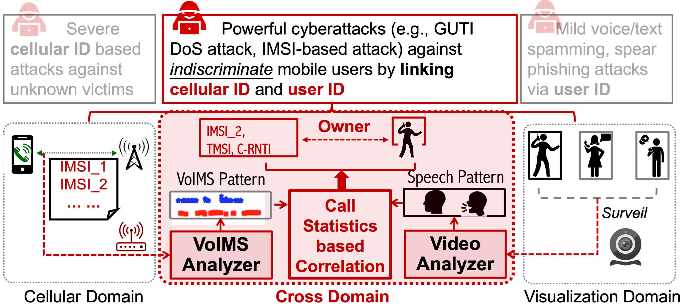

Greetings newcomer (or returning visitor) and welcome to my website! My name is Andrew Hou and I'm a 5th year computer vision PhD candidate at Michigan State University (MSU) specializing in face relighting and 3D face modeling. I am fortunately advised by Dr. Xiaoming Liu and am a member of the Computer Vision Lab. Previously, I received my Bachelor of Science from Brown University in Applied Mathematics and Computer Science.
In summer 2021, I was a research intern at Bosch in Sunnyvale, California, where I was fortunate to work with Drs. Yaojie Liu, Xinyu Huang, Liu Ren, and Sharath Gopal on foreign shadow removal from face portraits.
This past summer, I worked as a research intern with Drs. Zhixin Shu, Cecilia Zhang, He Zhang, Yannick Hold-Geoffroy, and Jae Shin Yoon on portrait shadow editing at Adobe Research in San Jose.
I have also been fortunate during my PhD to collaborate with Drs. Michel Sarkis
and Ning Bi from Qualcomm as well as Dr. Yiying Tong at MSU for multiple face relighting and 3D face modeling projects.
Publications

When Good Turns Evil: Encrypted 5G/4G Voice Calls Can Leak Your Identities
Jingwen Shi, Tian Xie, Guan-Hua Tu, Chunyi Peng, Chi-Yu Li, Andrew Hou, Sihan Wang, Yiwen Hu, Xinyu Lei, Min-Yue Chen, Li Xiao, Xiaoming Liu
CNS 2023

Face Relighting with Geometrically Consistent Shadows
Andrew Hou, Michel Sarkis, Ning Bi, Yiying Tong, Xiaoming Liu
CVPR 2022
Project Page |
PDF |
Arxiv |
Code |
Poster
Towards High Fidelity Face Relighting with Realistic Shadows
Andrew Hou, Ze Zhang, Michel Sarkis, Ning Bi, Yiying Tong, Xiaoming Liu
CVPR 2021
Project Page |
PDF |
Arxiv |
Code |
Poster |
Video
Effect of Data Size on Performance of Free-text Keystroke Authentication
Jiaju Huang, Daqing Hou, Stephanie Schuckers,
Zhenhao Hou
ISBA 2015
PDF
Personal Interests
I have a lot of diverse interests that tend to shift from time to time, but the most consistent ones are definitely listening to good music, singing,
anime, and working out. Some other hobbies of mine (that I usually enjoy) are different types of games (e.g. board games, card games, fighting games), various winter and racquet sports (e.g. skiing, skating, tennis, badminton), and watching exciting movies. I also enjoy trying new food (as well as eating food I already know is delicious) and meeting new people (usually). :)